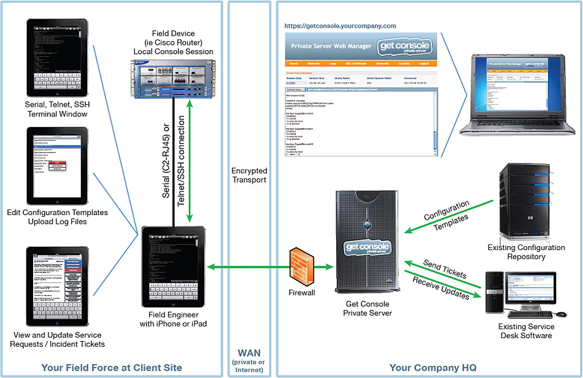

How it Works
Get Console Solution
Get Console Private Server is a virtual appliance - run it on VMWare in the corporate datacenter or private cloud. Additing Get Console Private Server transforms the Get Console app and iPad into an enterprise field team support and management tool. Get Console app users in the field can instantly access corporate standard configuration templates, check on service requests and get remote assistance by sharing their iPad terminal screen with remote NOC engineers.
How does the Get Console Private Server Work
3 minute video summary of Get Console
The basic Get Console terminal application has been enhanced with specific command shortcuts, cut/paste integration, detailed logging and a file/script browser. In addition the Get Console session sharing allows the local terminal session to be tunneled inside HTTPS to a get-console backend server. The method to encapsulate serial data within HTTPS is proprietary but is designed to both optimize the transmission and also survive firewall inspection (ie, it uses standards compliant HTTP messages).
One of the (currently 3) Get-Console backend servers (or the customers own Private Server), take the tunneled serial session, generate a one-time session code for it and advises that code back to the Get Console app. The field engineer can then either txt, email or simply verbally advise the NOC engineer of the session code . The get-console backend server also performs a multiplexing function to merge and sync an incoming SSH session from the webfront end with the tunneled serial session, thus making a 2 way end-to-end "serial" connection.
The get-console.com web front end server provides a javascript based terminal window for accessing the field engineers console session via the session code. In addition, the web front end captures the remote access log file, and also provides config and file upload/download capabilities.
What problems does it solve for Network Operations / Managed Service Providers?
| Problem / Situation | CCC Feature | Benefit |
|
Field engineer cannot efficiently follow NOC engineer guidance:
|
Remote Access |
The Get Console app allows the NOC engineers to take over the console session from the field engineer, allowing then to see everything, log everything, and control the remote cisco device completely. Accurate fault diagnosis, faster recovery, full audit trail, less time on site by third party engineer. |
Ultra time critical recovery needed for client:ance:
|
Instant On |
The Get Console app loads instantly vs the 5-10 minutes it takes for a field engineer laptop to boot. A remote engineer could be logged in and have solved the problem before a field engineer laptop has even booted. Should the field engineer be performing initial diagnostics, then the Get Console app has many Cisco specific command shortcuts built in to speed up data gathering and problem solving. Shorter access times = shorter outages for customer, shorter (cheaper) callouts from third party field engineers |
Remote equipment pre-staging / late changes:
|
Remote Access |
The Get Console app loads instantly vs the 5-10 minutes it takes for a field engineer laptop to boot. A remote engineer could be logged in and have solved the problem before a field engineer laptop has even booted. Should the field engineer be performing initial diagnostics, then the Get Console app has many Cisco specific command shortcuts built in to speed up data gathering and problem solving. Shorter access times = shorter outages for customer, shorter (cheaper) callouts from third party field |
Remote equipment pre-staging / late changes:
|
Remote Access Cmd Scripts File Access |
Reliable remote console access allows for equipment to be shipped directly to customers site and configured in situ. The Get Console Website allows for easy upload / download of configuration scripts to the remote console port via iPhone, / iPad This allows for a field engineer to perform the racking, powering and cabling of the new equipment, while the remote Senior engineer downloads the prepared configurations to the devices as the are powered on. Save Freight Costs, Save time with single step install and commissioning |
Remote Diagnostics gathering
|
Remote Access Full Remote Logging File attachments Copy / Paste |
Faster Cisco TAC case updated directly from the field are possible as the CCC app can run (for example) "show tech", which is saved to local log as a text file that can be instantly mailed to attach@cisco.com from the iPhone / iPad itself, rather than waiting for the field engineer to get back to the office to email it. Keep TAC cases on Cisco Pending not Customer Pending |
Making High Risk/Impact Changes Remotely
|
Remote Access |
The Get Console app allows senior engineers to make changes remotely that would otherwise require a senior engineer to visit the site. Such changes include high impact ones where inband access would be broken as part of the change, or to devices that are simply not accessable via inband IP networks. Save time and travel costs for Senior engineers Make high impact / risk changes with confidence |
Poor records of Field engineer activity
|
Separate Local and Remote Logging |
Remote engineers can see what the field engineer did prior to starting the remote session. Separate logs for local session and remote session ensure accurate audit trail of what commands were entered, when, and by whom. Keep full session logs without thinking |
Disaster Recovery
|
Xmodem and Files (v1.8) |
As a last resort, a new IOS file can be uploaded to the Iphone from the Get Console webportal, and from the iPhone, be on-uploaded to the failed device via xmodem. Its slow, but it works and can sometimes be the only option where there is no onsite spare. Note this feature will not be available in first release. Offer clients additional reassurance for hard to swapout equipment |
What hardware is required?
The Get Console app runs on Apple iPhone (3G , 3GS, 4), iPad (1,2), and iPod Touch (2Gen, 3Gen, 4Gen). All Apple devices must be running version iOS 4.2 or later. In addition to the app, for serial connections the user must have the "Redpark" RJ-45 Serial adaptor (Model C2-RJ45). This adaptor is a 1.8meter apple 30pin to RJ-45 (Cisco console) cable.
What Costs are involved?
- The Get Console app is US$9.99 available from the Apple app store
- The Redpark Apple 30 Pin to Cisco Console cable is US$59.00 available from www.get-console.com/shop or other retailers including www.redpark.com. Discounts for bulk purchases are available.
- For customers wanting to host their own Private Server version of the Get Console backend software inhouse then an additional client access license priced from $12 per device (depending on volume and whether they are yearly or perpetual). There is no charge for the Private Server software itself.
How does it compare to Webex / Team Viewer etc
The Get Console solution is designed primarily for the narrow niche of network equipment field services. Other solutions require the field engineer to have a laptop (with a working 3G or Wifi connection to the Internet). In addition, sending strange characters - such as "break" and "ctrl-shift-6" etc via a webex / teamviewer session is difficult, and ultimately their solution will cost more as it was not designed for network field service operations.